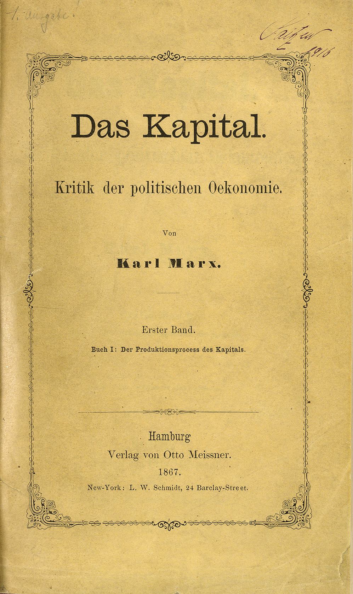

18. 民主的凯旋与困局：平等之后，谁来主宰？
大家好，我是杨照。
美国对民主的意义
我们将托克维尔在《论美国的民主》上下两卷所提出来的问题，以及他扩张这论题的适用性所发展出来的说法，把它统合在一起，我们可以联结起来看：研究美国是为了要研究美国的民主，而美国民主的核心精神就是平等，平等是人类无法抗拒、必然的未来。所以研究美国，实际上也就是在探索人类的未来。透过美国，托克维尔帮我们找到了人类未来的明确答案。
托克维尔他预言了平等是人类的未来，不过在探究、推论的过程当中，他并没有断言在人类通往平等未来道路上，美国、美国人会扮演什么样的角色。托克维尔他的立场，是将美国当作最早的示范，美国比其他人更早走上了这条未来的道路，更早显现了平等的具体面貌。
将近两百年之后，我们明白：美国不只是一个示范，美国还在提倡、传播、发扬平等的价值上，发挥了很大的作用。托克维尔他眼中的未来，就是我们当下的现实，很大一部分是由美国亲手打造的。美国在十九世纪逐渐兴起，到了二十世纪成为全球的强权，这过程所产生的一个效果，那就是决定了我们活在一个以民主和平等为主流的世界里。
美国在二十世纪强大到取代了原本的西方霸主英国，成为全世界的典范。英国称霸的时候，全世界的主流价值是帝国扩张；到美国称霸的时候，主流价值也就很自然，随而改成了民主和平等的政治制度。
美国的崛起并不是一件简单的事，中间牵涉到非常多复杂的因素，更不乏历史的偶然。美国崛起绝对不是单纯靠着美国本身的力量，而是伴随着欧洲的纷乱跟欧洲的没落而来的。十九世纪的欧洲列强制度，再加上各国都以英国的海洋殖民扩张作为国家发展的典范，于是注定了国与国之间经常处于高度紧张的状况，冲突甚至战争一触即发。
从克里米亚战争、普法战争，到1914年爆发第一次世界大战，再到1939年德国希特勒发动侵略战争，一个世纪当中，欧洲经常在打仗，战争一场比一场更惨烈。或者换一个方式说，在这段期间人类所进行的严重战争、破坏最大的战争，大部分都是在欧洲打的，一次又一次，结果就把欧洲打得越来越残破。
相较之下，隔着大西洋的美国，同样一段时间就只打过一场比较大、比较长的战争，那是1861年到1865年的南北内战。美国从来没有成为外来势力侵略的战场，光是战争的因素，就让欧洲和美国明显一消一长。这样的变化原本和民主没有关系，但一消一长的结果，却助长了民主的普遍说服力。民主的美国，比帝国主义的英国，比维持贵族传统制度的欧洲其他国家，都要来得更富庶，要来得更强大。
从托克维尔以降，民主和美国就紧密地联结在一起。说到美国，也就想到它的民主制度；说到民主，也就想到美国是民主最重要的示范。民主也就成了美国自身最强而有力的国家认同。上世纪50年代之后，冷战的局势更深化了这样的认同。美国以自由民主来抗衡苏联的集权社会主义，美国的立国精神、美国和苏联敌对的主要理由，都是卫护民主价值。
1989年，柏林围墙倒塌，接着苏联解体，当然就被美国人视为是民主自由战胜集权社会主义的结果。美国成为世界唯一的强权，民主也就相应地成为唯一的政治选项了。看起来，托克维尔的预言实现了，人类越来越倾向民主，越来越多国家采用了民主制度，给予所有的人平等的政治权力；少数保留政治权力不平等的国家，也就受到了越来越大的压力。
当然，到了二十一世纪，兴起了另外一个不同的变数，那就是中国。放在这样的一个历史过程当中，我们就发现，中国大国崛起，事实上就等于是阻拦甚至逆转原来美国民主价值在世界上越来越重要的这样的一个发展潮流。而中国崛起了之后，关于民主跟美国，乃至于美国作为一个典范，对世界所带来的作用又有了不一样的评估。
不过在二十世纪，我们可以看到，有这么多国家采用了、模仿了美国的民主，所以托克维尔他将近两百年前所写的书，在那样的一个情境底下，没有人会觉得他过时，甚至还变得越来越重要。
民主与平等的后遗症
托克维尔冷静地用自身的法国经验作为对照，一方面他早早就洞识了民主的价值和平等的力量，另外一方面，又早早地就察觉了民主的后遗症和平等的问题。
他早早地就告诉我们，选举活动在民主制度当中再重要不过，然而每一次选举都会让政治机器暂时停摆。他也早早就告诉我们，在选举的影响下，政治领袖会变成民意的俘虏。形式上，他是领袖，他是走在前面带路的人；然而实质上，他不会有独立精神，他不会有强烈的意见。如果有独立精神和强烈意见，那往往就过不了选举那关，爬到领袖的地位了。
托克维尔认为，三权分立架构当中，行政权地位最低，就因为行政权最缺乏独立性，必须要依照民意来施政。实质上掌控行政权的，是popular majority，是民意多数。民主制度的选举当中，一般不会选出真正有主见、有魄力的人，有主见、有魄力的人说不出可以讨好各方的话，也就通不过popular majority的考验。
托克维尔他将近两百年前就告诉我们，一个民主的社会，会把不同的领域给打平，使它们丧失了原本的高下区分。所以，在旧社会当中看来高高在上的政治领域，就陵夷向下，变得和商业、工业制造、教育等工作没有了明显的地位差别，产生的效应，那就是政治领域，也就失去了获取人才的优势。本来一个社会里特别有才能，成就特别高的，会优先选择进入政治领域，用才能换得较高的地位；到了民主的状态下，这种诱因消失了，政治也就不再能够吸引到好的人才。
托克维尔在将近两百年前就点出了：处理经济事务的人，会很快在才能跟品格上超过进入政治领域的人。他的说法挺恶毒的，他说：“在一个民主的社会里，通常是无能处理自己财产的人，才去处理国家的财产。”如果有能力处理自己的财产，可以把自己的财产处理得很好，你就可以从处理自己的财产获得极高的成就。既然处理自己的财产都忙不过来了，你哪有余裕，又干嘛需要去关心、去管理别人的财产呢？
对于托克维尔的恶毒说法，我们会心一笑，因为这的确是民主、平等社会在现实当中所出现的情况。但同时，我们应该要感觉到惊心动魄，毕竟写下这些意见的时候，托克维尔手上并没有资料显现我们正在经验的这个全球民主的现实，他是靠推论，而不是用观察记录的方式得到这些意见的。
平等社会里，财富成为新的标尺
那他为什么能够如此准确地推论呢？
首先，显然在民主的基本设计上有强烈的因果逻辑，环环相扣，所以使得民主在不同的环境里，都会有固定的发展模式，可以用逻辑思考的方式来推论。这是民主的特色。民主的共同性、一致性，远超过其他的政治制度。
民主的固定发展模式源自于民主不只是一个政治制度。托克维尔他最了不起的眼光，就在于他没有将民主单纯视为政治制度。他把民主放在一个更广大的社会环境、社会变数当中，一方面看怎样的社会变数有利于培养民主，另外一方面，换从相反的方向，去看民主的建立跟实施又是巨大、决定性的社会变数，改变、改造了整个社会的面貌。
当然，托克维尔的分析，还没有办法做得很细腻。毕竟，几个重要的分析理念工具，例如经济学、政治经济学，更不要说社会学，这个时候都还没有出现，也都没有成熟。亚当·斯密的《国富论》（The Wealth of Nations）是在1776年，也就是美国独立革命的那一年出版，开创了总体经济学的思考，但掌握国家经济活动的种种实证计算方式，到了1830年代仍然在摸索当中。马克思的《资本论》（Capital）要更晚才问世。所以，托克维尔当他在写这部书的时候，不会分开来去谈经济效应、社会变迁等，他没有用这种语汇，但实际上，他已经在碰触这样的一个复杂连锁的人类集体经验图像了。

1867年首版德语《资本论》第一卷封面
在下卷的第二部，他甚至触及了集体心理学。他的说法是要讨论“民主的感情效果”。在民主政治的体制当中，在平等的社会里，人们会倾向于创造、开发、扩展哪一方面的价值呢？相对地，又有哪些价值会萎缩、压抑乃至于消失？
托克维尔特别重视人对于物质的追求，这是他看到的平等、民主社会的特质。他先用这章跟我们解释，为什么一个民主社会当中，物质追求的冲动会升高，为什么物质追求变得越来越重要。再用下一章来推断，物质追求到了一定的程度之后，会出现反动、逆转，非物质性的乃至于宗教性的满足会被特别提出来。然后再下一章来说明：太过于关心世俗的财富、福祉，有时候不见得就真的能够增加财富、增加福祉，反而会倒过来伤害了财富和福祉。
这样的探讨，既是心理学的，也是经济学的。民主会有连带经济效应，源自于高涨的物质追求心理。民主社会当中，机会是平等的，没有什么框架限制你的机会，每个人都有权利，都有机会去增加财富，去累积财富。再者，平等的社会当中，身份高下也消失了，人与人之间的身份差别变得不重要。贵族、非贵族、僧侣、工匠、农夫……一律都被拉平了。于是，决定社会地位的标准，无可避免就朝向财富倾斜。谁有钱，谁就吸引比较多的羡慕的眼光，也就得到比较高的尊重，这就变成了一个平等社会最醒目的不平等。
在民主社会当中，人还是有不一样的身份，但身份的基本原则是difference（差异区别），而不是hierarchy（高下区别）。每个人有不一样的身份，但我们无法靠身份来决定彼此之间的高下。身份仍然在，但身份不再决定地位。然而在形式上的平等之下，人与人之间毕竟无法完全泯除地位高下的区分，无法去除人与人之间的种种忌妒、羡慕情绪，也无法去除差别待遇。所以，财富就取代了身份，变成了社会上决定地位高下的关键因素。
追求财富，是为了成为上帝的选民
可以用数字来衡量的财富成就，在美国就和清教信仰结合在一起，产生了更大的影响。托克维尔的书里面稍微提到了这一点。将近一个世纪之后，德国社会学家马克斯·韦伯（Max Weber）在他的名著《新教伦理与资本主义精神》当中，做了透彻、精彩的分析。
[德] 马克斯·韦伯，新教伦理与资本主义精神，上海人民出版社，2018
马克斯·韦伯他的论点、他的看法，如果大家有兴趣的话，请您参考听一下我在“看理想”的另外一个节目当中比较仔细的分析。（点击收听：《认识现代社会的真相：韦伯60讲》）但跟托克维尔相关的、跟美国相关的，就是韦伯指出了西方资本主义的精神根底：拼命努力，有了财富，却不会、不能够将财富化为生活享受，就只能够将财富拿去换取更大的成就，去累积更多的财富。因为这种集体信仰的动力，而产生了人类历史上前所未见的资本累积。
资本主义精神肇始于德国、荷兰等这些基督新教的地区，之后在美国大幅地扩张。托克维尔他已经观察到，在平等的环境底下，美国并没有成为一个被动的社会。平等、民主的原则，拿掉了身份的特权、优势，让每一个人的基本条件、人生出发的原点大致相同。靠着自己的勤劳努力，你创造了越多的成就，也就证明你有越高的价值，在上帝的预选表上，应该有越高的排名。而财富，是成就最好甚至唯一的衡量。
在这样的社会里，开头出发的时候，我们两个人都差不多等于零。二十年之后，我拥有五千，你只有两千，这就证明了二十年前我比你更辛苦、更努力，上帝会赋予我更多的努力成分。显然，他原来就把我放在天堂名单上的几率高于你。财富以更深刻、更根本的精神形成嵌入在美国人的感情结构里，他们不是从世俗现实的层面来对待、来追求财富的。
用我们今天的话语来说，那就是：民主跟平等刺激出不一样的经济动机。平等背后，也就附随着以个人为单位的集体评价。不是看你拥有什么，而是看你自己创造出了什么，来决定你在这个社会上的价值。关于这样的一种平等社会，甚至连在如何评价个人价值上都有着不一样的观念，不一样的信念。这是托克维尔他提出来，可以让我们深思的其中关键重点之一。
感谢您的收听，我们下次再会。